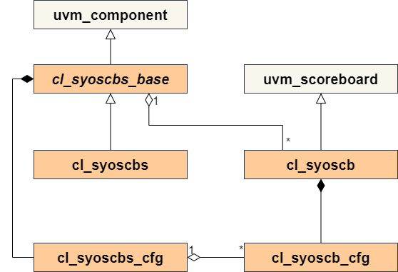

The UVM scoreboard is easily integrated into your existing testbench environment. The following steps should be followed to start using the UVM scoreboard:
- Compile the UVM scoreboard
- Access the UVM scoreboard from your own code
- Perform cactory overrides
- Instantiate the UVM scoreboard
- Configure the UVM scoreboard
- Add sequence items to the scoreboard
- Use the scoreboard wrapper for multiple similar scoreboards
Compiling the UVM scoreboard
To get the UVM scoreboard compiled you need to add src/pk_syoscb.sv to your list of files that are complied when compiling your testbench. How this is done is highly dependent on the verification environment since some environments compile everything into different libraries and some do not. Refer to your vendor's manual for further information on how to include packages.
Accessing the UVM scoreboard from your own code
Once the UVM scoreboard is compiled with the verification environment, it is accessible either by explicit scoping:
class myclass;
pk_syoscb::cl_syoscb my_new_scb;
...
or by importing the complete package into your scope:
import pk_syoscb::*;
class myclass;
cl_syoscb my_new_scb;
...
Factory overrides
Before instantiating the scoreboard, the desired queue type and compare algorithm need to be set in the scoreboard's configuration object. This is done by factory overrides since the queue type and compare algorithm can be changed on a per-test basis.
NOTE: This MUST be done before creating the scoreboard!
The queue type and compare algorithm should not be overwritten with a call to the UVM configuration databse. Instead, the scoreboard configuration object should be used.
The factory overrides are done in the build phase of the cl_syoscb, depending on the value of the cl_syoscb_cfg.queue_type and cl_syoscb_cfg.compare_type configuration knobs. If no overwriting is performed, the test will fail, as the default queue and comparison types are set to USER_DEFINED, a placeholder value for user-defined queue types and comparison types.
The scoreboard comes with a number of built-in queue types and comparison algorithms (see Queue implementation notes and Compare implementation notes). The following queue implementations are available:
- Standard SV queue (cl_syoscb_queue_std)
- MD5 queue (cl_syoscb_queue_hash_md5)
and the following compare algorithms are available:
- Out of Order (OOO, cl_syoscb_compare_ooo)
- In Order (IO, cl_syoscb_compare_io).
- In Order with 2 queues, high performance (IO_2HP, cl_syoscb_compare_io_2hp)
- In Order by Producer (IOP, cl_syoscb_compare_iop)
Setting the queue topology is done with the method set_queue_type in cl_syoscb_cfg. For example, the following line shows how to select the MD5 queue topology for a scoreboard.
this.syoscb_cfg.set_queue_type(pk_syoscb::SYOSCB_QUEUE_MD5);
The following line shows an example of how to change the compare strategy. Here, OOO comparisons are enabled.
this.syoscb_cfg.set_compare_type(pk_syoscb::SYOSCB_COMPARE_OOO);
All of the enum values used for selecting queue type and compare algorithm can be found in src/syoscb_common.svh.
Instantiating the UVM scoreboard
The UVM scoreboard itself needs to be instantiated along with the configuration object. The simplest way to to this is to add the UVM scoreboard and the configuration object to the UVM environment – note that the configuration object is passed to the scoreboard via the uvm_config_db.
import pk_syoscb::*;
class cl_scbtest_env extends uvm_env;
cl_syoscb syoscb;
cl_syoscb_cfg syoscb_cfg;
`uvm_component_utils_begin(cl_scbtest_env)
`uvm_field_object(syoscb, UVM_ALL_ON)
`uvm_field_object(syoscb_cfg, UVM_ALL_ON)
`uvm_component_utils_end
...
endclass: cl_scbtest_env
function void cl_scbtest_env::build_phase(uvm_phase phase);
super.build_phase(phase);
// Create the scoreboard configuration object
this.syoscb_cfg = cl_syoscb_cfg::type_id::create("syoscb_cfg");
// Pass the scoreboard configuration object to the config_db
uvm_config_db #(cl_syoscb_cfg)::set(this, "syoscb", "cfg", this.syoscb_cfg);
// Create the scoreboard
this.syoscb = cl_syoscb::type_id::create("syoscb", this);
...
endfunction: build_phase
Configuring the UVM scoreboard
A default configuration is not created, so a configuration object must be constructed, configured and set in the UVM configuration database for each scoreboard instance to pick it up. One must create a separate scoreboard configuration object for each scoreboard instance. It cannot be reused! The following example shows a scoreboard with two queues, Q1 and Q2, with Q1 as the primary queue. Furthermore, one producer P1 is added to both queues:
function void cl_scbtest_env::build_phase(uvm_phase phase);
super.build_phase(phase);
// Create the scoreboard configuration object
this.syoscb_cfg = cl_syoscb_cfg::type_id::create("syoscb_cfg");
// Configure the scoreboard
this.syoscb_cfg.set_queues({"Q1", "Q2"});
void'(this.syoscb_cfg.set_primary_queue("Q1"));
void'(this.syoscb_cfg.set_producer("P1", {"Q1", "Q2"}));
// Pass the scoreboard configuration object to the config_db
uvm_config_db #(cl_syoscb_cfg)::set(this, "syoscb", "cfg", this.syoscb_cfg);
// Create the scoreboard
this.syoscb = cl_syoscb::type_id::create("syoscb", this);
...
endfunction: build_phase
For more info about the configuration options, see pConfiguration.
Full build phase
The full build phase of our example environment cl_scbtest_env is shown here for completeness:
function void cl_scbtest_env::build_phase(uvm_phase phase);
super.build_phase(phase);
// Use the MD5 queue implementation as scoreboard queue
this.syoscb_cfg.set_queue_type(pk_syoscb::SYOSCB_QUEUE_MD5);
// Set the compare strategy to be OOO
this.syoscb_cfg.set_compare_type(pk_syoscb::SYOSCB_COMPARE_OOO);
// Create the scoreboard configuration object
this.syoscb_cfg = cl_syoscb_cfg::type_id::create("syoscb_cfg");
// Configure the scoreboard
this.syoscb_cfg.set_queues({"Q1", "Q2"});
void'(this.syoscb_cfg.set_primary_queue("Q1"));
void'(this.syoscb_cfg.set_producer("P1", {"Q1", "Q2"}));
// Pass the scoreboard configuration object to the config_db
uvm_config_db #(cl_syoscb_cfg)::set(this, "syoscb", "cfg", this.syoscb_cfg);
// Create the scoreboard
this.syoscb = cl_syoscb::type_id::create("syoscb", this);
...
endfunction: build_phase
Add sequence items to the scoreboard
Function based API hook up
The function based API is very easy to use once you have done the configuration and instantiation of the scoreboard as described above.
Whenever you need to add a UVM sequence item to a queue produced by a specified producer, simply invoke the cl_syoscb::add_item() method:
// *NOTE*: Assumes syoscb is handle to an instance of the scoreboard and
// item1 is a handle to a UVM sequence item
...
// Insert UVM sequence item for queue: Q1, for producer: P1
syoscb.add_item("Q1", "P1", item1);
Invoking the cl_syoscb::add_item() method will wrap the UVM sequence item in a cl_syoscb_item object, add it to the correct queue and finally invoke the configured compare algorithm.
The UVM environment will typically contain a handle to the scoreboard as described above. This can then be utilized if UVM sequence item needs to be added from a test case:
class cl_scbtest_seq_item extends uvm_sequence_item;
//-------------------------------------
// Randomizable variables
//-------------------------------------
rand int unsigned int_a;
//-------------------------------------
// UVM Macros
//-------------------------------------
`uvm_object_utils_begin(cl_scbtest_seq_item)
`uvm_field_int(int_a, UVM_ALL_ON)
`uvm_object_utils_end
//-------------------------------------
// Constructor
//-------------------------------------
function cl_scbtest_seq_item::new (string name = "cl_scbtest_seq_item");
super.new(name);
endfunction
endclass: cl_scbtest_seq_item
class cl_scbtest_test extends uvm_test;
//-------------------------------------
// Non randomizable variables
//-------------------------------------
cl_scbtest_env scbtest_env;
//-------------------------------------
// UVM Macros
//-------------------------------------
`uvm_component_utils(cl_scbtest_test)
//-------------------------------------
// Constructor
//-------------------------------------
function new(string name = "cl_scbtest_test", uvm_component parent = null);
super.new(name, parent);
endfunction: new
//-------------------------------------
// UVM Phase methods
//-------------------------------------
function void build_phase(uvm_phase phase);
super.build_phase(phase);
scbtest_env = cl_scbtest_env::type_id::create("scbtest_env", this);
endfunction: build_phase
task run_phase(uvm_phase phase);
super.run_phase(phase);
begin
cl_scbtest_seq_item item1;
item1 = cl_scbtest_seq_item::type_id::create("item1");
item1.int_a = 'h3a;
scbtest_env.syoscb.add_item("Q1", "P1", item1);
end
begin
cl_scbtest_seq_item item1;
item1 = cl_scbtest_seq_item::type_id::create("item1");
item1.int_a = 'h3a;
scbtest_env.syoscb.add_item("Q2", "P1", item1);
end
endtask: run_phase
endclass: cl_scbtest_test
TLM based API hook up
The TLM API is even easier to use than the function based API. The scoreboard provides a generic UVM subscribers for each producer on each queue. This subscriber can cbe onnected to anything which has a UVM analysis port (e.g. a UVM monitor). Typically, the UVM agents inside the UVM environment contain one or more monitors with UVM analysis ports which should be connected to the scoreboard. The following example shows two agents, each of which has a monitor. The monitors are connected to Q1 and Q2 in the scoreboard, acting as producer P1:
import pk_syoscb::*;
class cl_scbtest_env extends uvm_env;
cl_syoscb syoscb;
cl_syoscb_cfg syoscb_cfg;
myagent agent1;
myagent agent2;
...
function void build_phase(uvm_phase phase);
...
// Configure and create the scoreboard
// Create and configure the agents
...
endfunction: build_phase
...
function void connect_phase(uvm_phase phase);
super.connect_phase(phase);
begin
cl_syoscb_subscriber subscriber;
// Get the subscriber for Producer: P1 for queue: Q1 and connect it
// to the UVM monitor producing transactions for this queue
subscriber = this.syoscb.get_subscriber("Q1", "P1");
this.agent1.mon.<analysis port>.connect(subscriber.analysis_export);
// Get the subscriber for Producer: P1 for queue: Q2 and connect it
// to the UVM monitor producing transactions for this queue
subscriber = this.syoscb.get_subscriber("Q2", "P1");
this.agent1.mon.<analysis port>.connect(subscriber.analysis_export);
end
endfunction: connect_phase
endclass: cl_scbtest_env
Multiple SCB instances & filter transforms
The SyoSil UVM scoreboard also comes with a scoreboard wrapper, cl_syoscbs_base, which can be used to instantiate several scoreboards with similar configurations.
A configuration wrapper, cl_syoscbs_cfg, is used to configure the scoreboard wrapper. The configuration wrapper contains N configuration objects, one for each wrapped scoreboard. The wrapped scoreboards may have different queue / producer names and numbers of queues/producers, or they may be the same. See the figure below for a UML diagram of the relationship between individual scoreboards and their configurations, and the scoreboard wrapper and its configuration object.

Filter transforms
Since UVM analysis ports are parameterized with the types of items they will accept, and the SyoSil scoreboard's cl_syoscb_subscriber expects input items to be of type uvm_sequence_item, a transformation must be used to upcast sequence items to this datatype before they are inserted. When using a single scoreboard, this transformation can easily be instantiated manually, or items can be upcast in a monitor before being written to the attached subscriber.
In the case where 100's or 1000's of scoreboards are used, manually instantiating and connecting all of these transforms can become tedious. Instead, the scoreboard wrapper offers filter transforms to automate the process. When creating the scoreboard wrapper cl_syoscbs, it must be parameterized with the type of sequence items that will be input. It then automatically instantiates a transformation object for each subscriber, and connects its output to the input of the subscriber. Now, instead of retrieving the subscribers for each queue/producer, a filter transform for each scoreboard's queue/producer combination should be retrieved.
The default filter transform pk_utils_uvm::filter_trfm, included in lib/pk_utils_uvm.sv, simply upcasts its input to a uvm_sequence_item before passing it on to the scoreboard. If more complex transforms are required, you can extend cl_syoscbs_base and implement cl_syoscb_base::create_filter to suit your needs.
The class cl_syoscbs_base serves as the base class for the scoreboard wrapper, and a default implementation is included in cl_syoscbs. The default implementation should be enough for most applications
In the example below, a scoreboard wrapper with 10 scoreboards is created. Each scoreboard has two queues, DUT and REF, each of which has two producers, P1 and P2. In the environment's build phase, the scoreboard wrapper and config object are created. After initializing the configuration object, it is passed to the scoreboard wrapper with the UVM configuration database. In the environment's connect phase, each DUT agent is connected to filter transforms associated with their respective scoreboard. The parameter FIN is the input type to the filter transforms. The filter transforms convert this type to a uvm_sequence_item which is passed into the scoreboard.
import pk_syoscb::*;
class cl_scbs_env#(type FIN = my_seq_item) extends uvm_env;
int NUM_SCB = 10;
cl_syoscbs#(FIN) syoscbs;
cl_syoscbs_cfg syoscbs_cfg;
dut_agent dut_agents[NUM_SCB];
ref_agent ref_agents[NUM_SCB];
string producers[] = '{"P1", "P2"};
string queues[] = '{"DUT", "REF"};
...
function void build_phase(uvm_phase phase);
super.build_phase(phase);
this.syoscbs_cfg = cl_syoscbs_cfg::type_id::create("syoscbs_cfg");
//Create an scb wrapper named my_syoscbs with 10 scoreboards. They will be named "scb[i]",
//and each will have queues named "DUT", "REF", and each queue will have producers "P1" and "P2"
this.syoscbs_cfg.init("syoscbs", NUM_SCB, "scb", queues, producers);
uvm_config_db #(cl_syoscbs_cfg)::set(this, "", "syoscbs", this.syoscbs_cfg);
this.syoscbs = cl_syoscbs#(FIN)::type_id::create("syoscbs");
... //Create and configure all dut agents and ref agents
endfunction: build_phase
function void connect_phase(uvm_phase phase);
//Each DUT agent is connected to a separate scoreboard
foreach(dut_agents[i]) begin
pk_utils_uvm::filter_trfm#(FIN, uvm_sequence_item) filter_trfm_p1;
pk_utils_uvm::filter_trfm#(FIN, uvm_sequence_item) filter_trfm_p2;
//Get handles to the filter transforms connected to DUT queue for P1 and P2, scoreboard 'i'
filter_trfm_p1 = this.syoscbs.get_filter_trfm("DUT", "P1", i);
filter_trfm_p2 = this.syoscbs.get_filter_trfm("DUT", "P2", i);
//Connect agents to filter transforms
dut_agents[i].p1_anls_port.connect(filter_trfm_p1.analysis_export);
dut_agents[i].p2_anls_port.connect(filter_trfm_p2.analsysi_export);
end
// ... Perform the same procedure for reference model ports
endfunction: connect_phase
The included testcases also include several tests using the scoreboard wrapper, which can be used as a starting point. See cl_scbs_test_base and cl_tb_env_scbs. See tb/test/scbs/cl_scbs_test_base and tb/cl_tb_env_scbs.